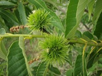

栗の生産量 都道府県ランキング
全22都道府県の順位と収穫量
最終更新：
栗の収穫量が全国で最も多いのは茨城県で、3,780 tです。全国（1万4,000 t）の27%を占めます。
最新の令和7年産（速報値）では、1位は茨城県で4,200 tです（速報値の表）。

| 順位 | 都道府県 | 収穫量 | 全国に占める割合 |
|---|---|---|---|
| 1位 | 茨城県 | 3,780 t | 27% |
| 2位 | 熊本県 | 1,640 t | 12% |
| 3位 | 愛媛県 | 1,350 t | 9.6% |
| 4位 | 岐阜県 | 658 t | 4.7% |
| 5位 | 栃木県 | 475 t | 3.4% |
| 6位 | 埼玉県 | 455 t | 3.2% |
| 7位 | 長野県 | 440 t | 3.1% |
| 8位 | 兵庫県 | 348 t | 2.5% |
| 9位 | 神奈川県 | 336 t | 2.4% |
| 10位 | 宮崎県 | 334 t | 2.4% |
| 11位 | 岡山県 | 300 t | 2.1% |
| 12位 | 千葉県 | 269 t | 1.9% |
| 13位 | 広島県 | 267 t | 1.9% |
| 14位 | 山口県 | 259 t | 1.8% |
| 15位 | 大分県 | 226 t | 1.6% |
| 16位 | 京都府 | 210 t | 1.5% |
| 17位 | 東京都 | 196 t | 1.4% |
| 18位 | 静岡県 | 142 t | 1.0% |
| 19位 | 石川県 | 79 t | 0.6% |
| 20位 | 大阪府 | 69 t | 0.5% |
| 21位 | 島根県 | 40 t | 0.3% |
| 22位 | 香川県 | 15 t | 0.1% |
栗の収穫量 都道府県ランキング（令和7年産・速報値）
上の表（確報）より新しい令和7年産の速報値です。速報値は、あとで確報が公表されるときに数字が直ることがあります。確報が出たら、上の表をその数字に差し替えます。果樹の速報は主な産地の22県だけを調べたもので、順位はその中での順位です。
| 順位 | 都道府県 | 収穫量 | 全国に占める割合 |
|---|---|---|---|
| 1位 | 茨城県 | 4,200 t | 26% |
| 2位 | 熊本県 | 2,400 t | 15% |
| 3位 | 愛媛県 | 1,750 t | 11% |
| 4位 | 岐阜県 | 656 t | 4.0% |
| 5位 | 長野県 | 540 t | 3.3% |
| 6位 | 宮崎県 | 516 t | 3.2% |
| 7位 | 兵庫県 | 405 t | 2.5% |
| 8位 | 埼玉県 | 402 t | 2.5% |
| 9位 | 栃木県 | 399 t | 2.5% |
| 10位 | 岡山県 | 345 t | 2.1% |
全国の収穫量は1万6,200 t（令和7年産 速報値）です。
PR

栗の生産量の推移（令和2年産〜令和6年産）
全国の収穫量は、令和2年産の1万6,900 tから令和6年産の1万4,000 tへ、17%減りました。期間中、1位は一貫して茨城県です。
| 年 | 全国 | 1位 | 2位 | 3位 |
|---|---|---|---|---|
| 令和6年産 | 1万4,000 t | 茨城県3,780 t | 熊本県1,640 t | 愛媛県1,350 t |
| 令和5年産 | 1万5,000 t | 茨城県3,870 t | 熊本県1,820 t | 愛媛県1,570 t |
| 令和4年産 | 1万5,600 t | 茨城県3,670 t | 熊本県2,280 t | 愛媛県1,200 t |
| 令和3年産 | 1万5,700 t | 茨城県3,800 t | 熊本県2,210 t | 愛媛県1,300 t |
| 令和2年産 | 1万6,900 t | 茨城県3,790 t | 熊本県2,430 t | 愛媛県1,540 t |
この数字について
- 分類：ブナ科
- 全国の収穫量：1万4,000 t
- この数字が表すもの：収穫量（収穫された重量）
- 調査：作物統計調査 作況調査（果樹） 令和6年産
- 22県分を調査（調査していない県は順位に入りません）
栗の生産量について、よくある質問
- 栗の生産量が日本一の都道府県はどこですか？
- 茨城県です。作物統計調査 作況調査（果樹）（令和6年産）で3,780 tでした。
- 栗の生産量ランキング2位・3位はどこですか？
- 2位は熊本県（1,640 t）、3位は愛媛県（1,350 t）です。
- 栗の生産量ランキング4位・5位はどこですか？
- 4位は岐阜県（658 t）、5位は栃木県（475 t）です。栗の全22県の順位は上の表のとおりです。
- 栗の全国の生産量はどれくらいですか？
- 1万4,000 t（令和6年産）です。
広告